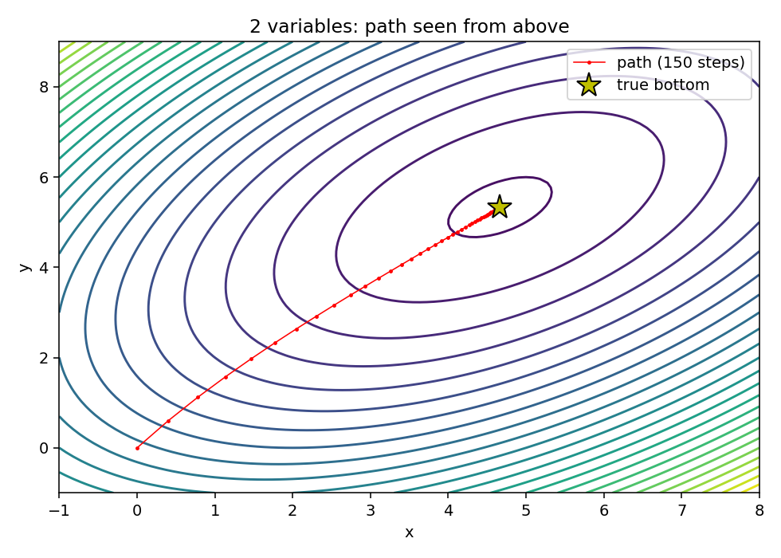
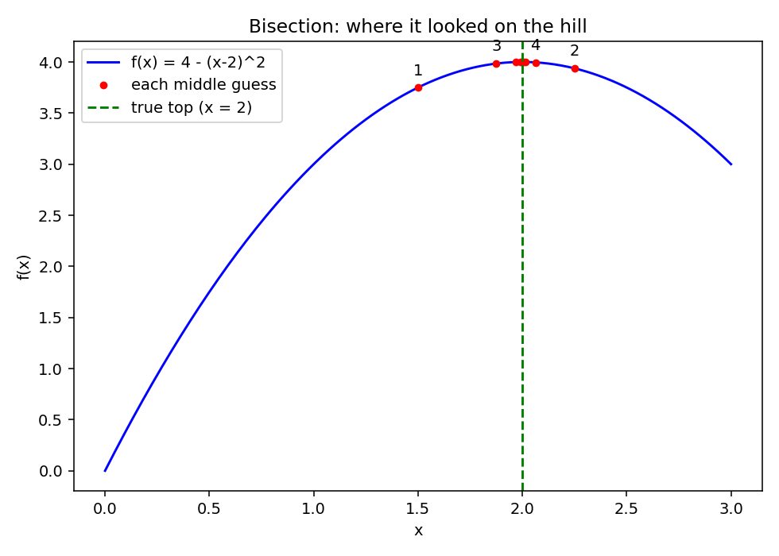
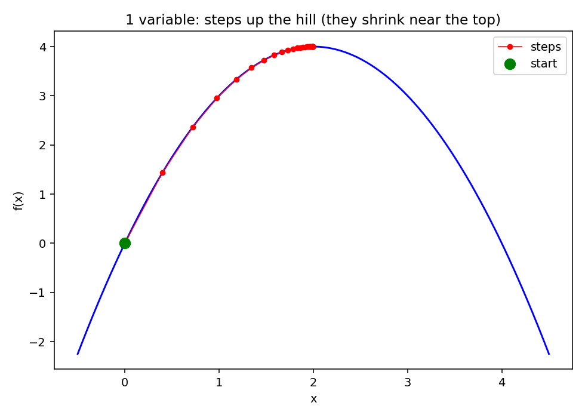
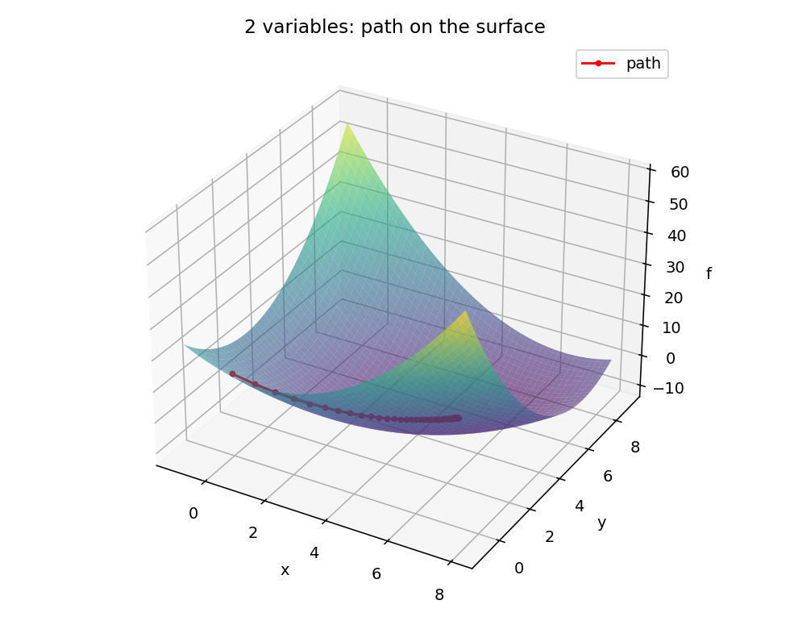

Computation created in a background of history.
I'm a rising senior at Bates College, double majoring in History and Digital and Computational Studies.
Chris Scotti, Bates College, Class of 2027

Finding the highest or lowest point of a function
In DCS 340 we studied classical optimization: methods for finding where a function reaches its peak or its lowest point..
Bisection
Bisection finds the top of a hill by trapping it. The slope is positive on one side of the peak and negative on the other, so the peak has to sit in between. Each step checks the middle of the window and throws away the half that can't contain it.


Gradient descent
Gradient descent doesn't trap anything. It stands somewhere, checks which way the ground slopes, and takes a small step downhill. The image at the top of this page shows a two-variable run from above. Here is the same idea with one, two and three variables.



.
The code
Every file runs on its own, with no other files needed. Each one uses only NumPy and Matplotlib.
bisection_graphs.pymakes the two bisection images.gradient_descent_graphs.pymakes the gradient descent images.